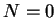
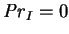
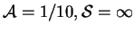

Jhaveri and Rosenberger (1982) gave an extensive critique of Klosse and Ullersma's (1973; §3.3.1) model by comparing it with two-dimensional numerical solutions. Jhaveri and Rosenberger's numerical model is somewhat simplified in that it neglects the contribution of compositional variation to buoyancy () and omits interdiffusion ( ); this is not completely unphysical, in so far as it would occur if the gas and vapour had equal molar masses and partial specific heat capacities, but is generally an inconsistent approximation. As only very shallow cavities were considered ( )--this being one of Klosse and Ullersma's basic assumptions--the results are not directly applicable to any of the specific problems treated in this project.
One relevant feature of the paper is the use of a Sherwood number equivalent to (2.60). Jhaveri and Rosenberger arrived at this normalization of the vapour transport by considering one-dimensional solutions. The same reasoning will be applied here in chapter 4.